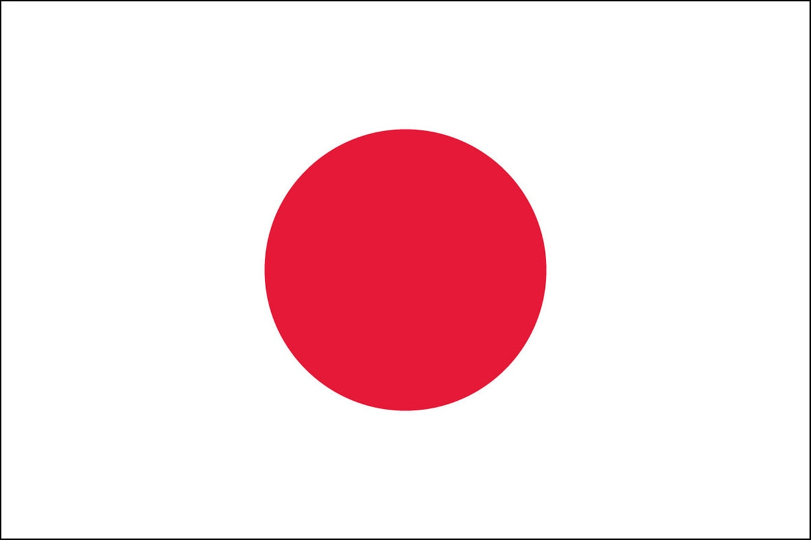

country
- KOREA
- CANADA
- JAPAN
JAPAN
Japan is an island country in East Asia, located in the northwest Pacific Ocean.
It is bordered on the west by the Sea of Japan,
and extends from the Sea of Okhotsk in the north toward the East China Sea
and Taiwan in the south.

Part of the Ring of Fire,
Japan spans an archipelago of 6852 islands covering 377,975 square kilometers
(145,937 sq mi); the five main islands are Hokkaido, Honshu, Shikoku, Kyushu, and Okinawa.
Tokyo is Japan's capital and largest city; other major cities include Yokohama, Osaka, Nagoya, Sapporo, Fukuoka, Kobe, and Kyoto.
더 자세한 정보는 네이버를 참고 해주시길 바랍니다.